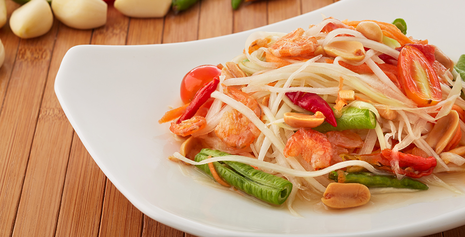

Papaya Salad
Thai green papaya salad (known in Thai as som tam ) is an extremely popular dish in Thai cuisine. It's fresh, and balances all the flavors of sweet, spicy, salty, and sour, to perfection on a single plate.
Ingredients
- 2 cloves of garlic
- 5 Thai chillies (up to you how many depending on how spicy you want it)
- 2 tablespoons shelled roasted peanuts
- 1 tablespoon fish sauce
- ½ - 1 tablespoon palm sugar (can also substitute brown sugar
- 1 - 2 limes (I used about 2, but I like things pretty sour)
- 1 tablespoon of dried shrimp (optional
- 1 - 2 small tomatoes (the som tam tomatoes in Thailand are different from regular tomatoes - they are known as sida tomatoes, but you could use just 1 roma tomato)
- 1 big handful of slivered green papaya (depending on the size of your papaya, I used only about ⅓ of my papaya in this recipe, but papayas come in many different sizes and shapes)
To Garnish
- Long-beans or green beans
- Green cabbage
- Thai sweet basil
- More roasted peanuts
Recipe Instructions
- After washing the green papaya, peel off the skin using a carrot peeler (or a knife will do as well). You can then either use a cheese grater to shave the papaya, or you can do it the traditional way and hack at the papaya with your knife until there are numerous vertical cuts, then shave off the top layer into thin slivers, and repeat. I like the traditional method as you get bigger, un-even, pieces of green papaya. Cut enough green papaya to have a big handful worth for this recipe.
- Add 2 cloves of peeled garlic and 5 chillies (or however many you like) to the mortar (krok). Pound them for a few seconds until the garlic is crushed and chilies are reduced to small bits.
- Add ½ tablespoon of palm sugar, 1 tablespoon of fish sauce, and then squeeze the juice from 1 - 2 limes into the mortar. You can always start with less seasoning and add more to your liking.
- Mix and pound the dressing, making sure the palm sugar gets fully dissolved into the liquid (so no one bites into a chunk of pure palm sugar).
- Add about 1 tablespoon of roasted peanuts (no need to measure, just grab some with your hand), 1 tablespoon of dried shrimp, and then roughly slice in the tomatoes into the mortar
- Pound the mixture for about 30 seconds, lightly breaking up the tomatoes, shrimp, and peanuts. No need to pound too hard.
- Last step is to toss in a big handful of the green papaya shavings. Mix it all together, doing a combination of using just a spoon and pounding lightly, but no need to pound hard. Make sure the dressing is coating all the green papaya and that the salad is evenly mixed through and through..

All Rights Reserved